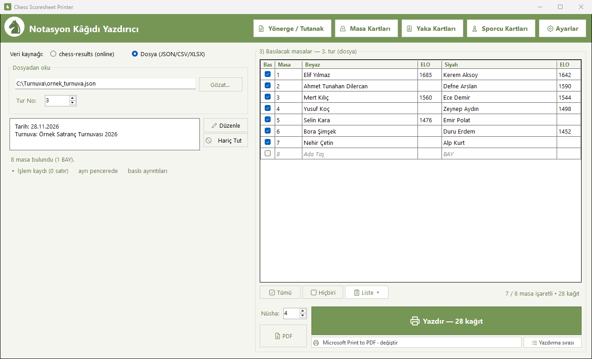
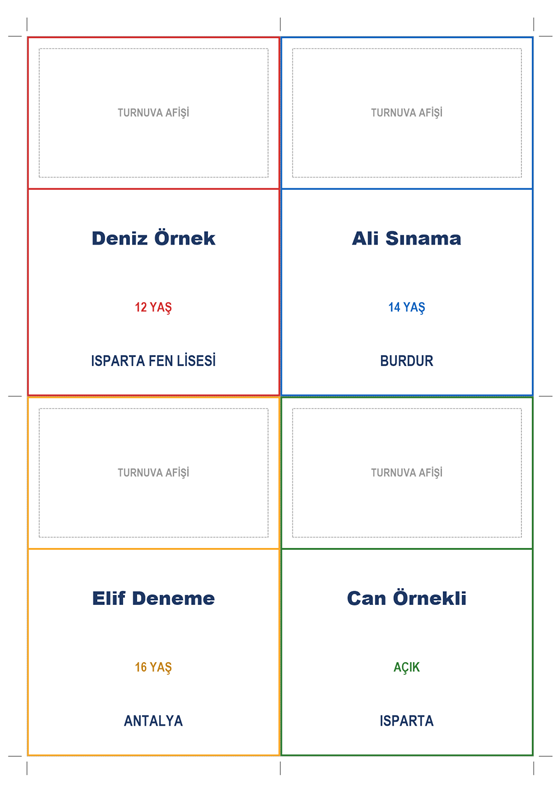
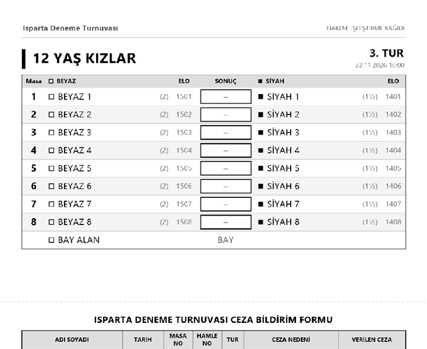

Satranç turnuvaları için yazdırma programı. Eşleştirmeleri chess-results'tan alır; notasyon kâğıtlarını, hakem eşleştirme kağıtlarını, yaka kartlarını ve masa kartlarını hazırlayıp yazdırır.
Windows için indirTaşınabilir sürüm (ZIP, kurulumsuz) Sürüm notları Kaynak kod

Eşleştirmeler hazır basılı kâğıtlara yerleştirilir. İsviçre, Berger ve takım turnuvaları desteklenir; tur ve kategoriye göre toplu yazdırılır.
İri yazılı, sonuç kutulu kağıtlar ve ceza bildirim formu. Siyah beyaz baskıya uygundur.
Sporcu, hakem ve görevli kartları. Kategori renkleri masa kartlarıyla ortaktır.
Turnuva afişi ve kategori adıyla A4 masa kartları; logo yerleşimi ayarlanabilir.
Eşleştirme, sonuç ve sıralama listeleri salon panosu için A4'e hazırlanır.
Turnuva bilgileriyle doldurulan hazır şablonlar; PDF, yazıcı ya da Word çıktısı.

